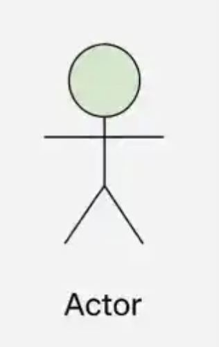
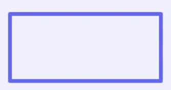
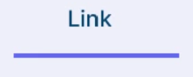
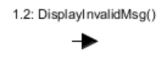
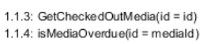
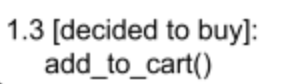
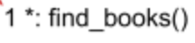
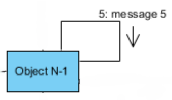
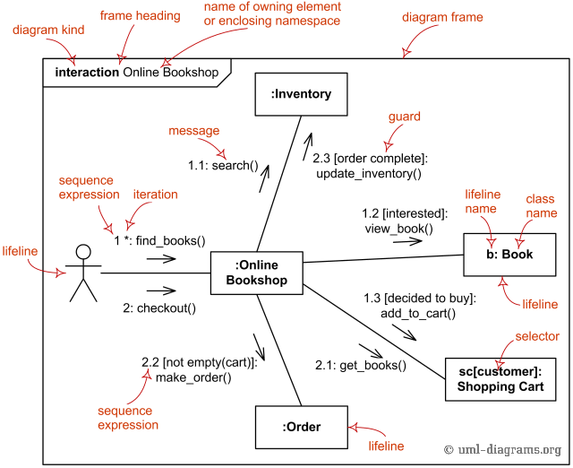

ترقيم الرسائل
استخدم أرقامًا واضحة لتوضيح ترتيب تنفيذ الرسائل، مثل 1 و1.1 و1.2 عند وجود رسائل متداخلة أو استدعاءات فرعية.
مخطط التواصل
يُستخدم مخطط التواصل لتوضيح التفاعلات بين الكائنات أو الجهات المشاركة في تنفيذ سيناريو معين، مع التركيز على الروابط بينها والرسائل المتبادلة. ويُستخدم ترقيم الرسائل لتوضيح ترتيب تنفيذها.
| العنصر | رمز | الشرح |
|---|---|---|
| Actor |
 |
يمثّل مستخدمًا أو جهة خارجية تتفاعل مع النظام، وقد يبدأ إرسال الرسائل أو يستقبلها. |
| Class |
 |
يمثّل الصنف الذي يحدد خصائص الكائنات وسلوكها، ويُكتب اسمه داخل مستطيل يمثل المشارك في التفاعل. |
| Link |
 |
خط يوضح وجود اتصال بين المشاركين، ويُرسم بين المشاركين الذين يتبادلون الرسائل. |
| Message |
 |
سهم يوضح رسالة تُرسل من مشارك إلى آخر عبر رابط بينهما، ويُكتب اسم الرسالة فوق السهم. |
| Sequence Number |
 |
رقم يوضح ترتيب الرسالة ضمن التفاعل، مثل 1 و1.1 و1.2. |
| Guard Condition |
 |
شرط يُكتب بين أقواس مربعة، مثل [valid]، لتحديد متى تُرسل الرسالة أو يُنفّذ التفاعل. |
| Iteration |
 |
ترميز يوضح تكرار إرسال رسالة، ويُستخدم عند الحاجة إلى تمثيل تكرار التفاعل. |
| Self Message |
 |
رسالة يرسلها المشارك إلى نفسه لتمثيل عملية داخلية أو استدعاء داخلي. |
تُكتب الرسالة بالصيغة التالية:
1.2 : [condition] function(parameters): returnValue
ويتكوّن التنسيق من الأجزاء التالية:
Sequence Number:
رقم الرسالة الذي يوضح ترتيبها، مثل 1.2.
Colon (:):
يفصل رقم الرسالة عن بقية تفاصيلها.
Guard Condition:
شرط اختياري يُكتب بين أقواس مربعة، مثل [valid].
Function:
اسم العملية أو الدالة التي تُستدعى.
Parameters:
المعاملات التي تُمرّر إلى الدالة بين الأقواس.
Return Value:
القيمة التي تعيدها الدالة، عند الحاجة إلى توضيحها.
ملاحظة: الشرط condition، والمعاملات parameters، والقيمة المرجعة returnValue عناصر اختيارية (Optional)، ويمكن حذفها عند عدم الحاجة إليها.
| وجه المقارنة | Sequence Diagram | Communication Diagram |
|---|---|---|
| التركيز الأساسي | يركّز على الترتيب الزمني للرسائل والتفاعلات بين المشاركين. | يركّز على الروابط بين المشاركين والرسائل المتبادلة بينهم. |
| طريقة عرض الترتيب | يُوضّح ترتيب الرسائل من الأعلى إلى الأسفل. | يُوضّح ترتيب الرسائل باستخدام أرقام التسلسل. |
| تمثيل المشاركين | يظهر كل مشارك مع Lifeline رأسي يوضّح امتداده خلال التفاعل. | يظهر المشاركون مرتبطين ببعضهم عن طريق Links. |
| عرض الرسائل | تُرسم الرسائل بين خطوط المشاركين، ويُوضّح ترتيبها مكانيًا من الأعلى إلى الأسفل. | تُرسم الرسائل على الروابط بين المشاركين، ويُوضّح ترتيبها باستخدام الترقيم. |
| إظهار الروابط | لا يكون التركيز على رسم الروابط المستقلة بين المشاركين. | تُعد الروابط بين المشاركين عنصرًا أساسيًا في المخطط. |
| التعامل مع التفاعلات المتفرعة | يمكن استخدام Combined Fragments مثل alt وopt وloop. | يمكن توضيح التفاعلات المشروطة باستخدام شروط الرسائل وترقيمها. |
| أنواع الرسائل | Synchronous Message، Asynchronous Message، Return Message. | |
ملاحظة: يمكن استخدام Sequence Diagram أو Communication Diagram لتمثيل التفاعل نفسه؛ فكلاهما يوضّح جوانب مختلفة من التفاعل. لذلك، عادةً نختار أحدهما وفقًا للجانب الذي نريد التركيز عليه، ولا نحتاج إلى رسم الاثنين معًا لتمثيل التفاعل نفسه.
استخدم أرقامًا واضحة لتوضيح ترتيب تنفيذ الرسائل، مثل 1 و1.1 و1.2 عند وجود رسائل متداخلة أو استدعاءات فرعية.
إذا كان هناك مساران بديلان، مثل نجاح العملية أو فشلها، فيمكن استخدام نفس رقم التسلسل للرسالتين البديلتين مع إضافة شرط لكل رسالة لتمييز المسار الذي يُنفّذ.
2 : [valid] grantAccess()
2 : [invalid] showError()
في هذا المثال، تحمل الرسالتان الرقم نفسه لأنهما تمثلان مسارين بديلين في الموضع نفسه من التفاعل، بينما تحدد الشروط المسار الذي يُنفّذ.
يجب رسم Link لكل رسالة، حتى لو كانت الرسائل متبادلة بين المشاركين نفسيهما.
لا تحتاج Return Message إلى رقم تسلسل مستقل لأنها توضّح قيمة.
استخدم أسماء واضحة تعبّر عن العملية، مثل requestLogin() وvalidateCredentials().
